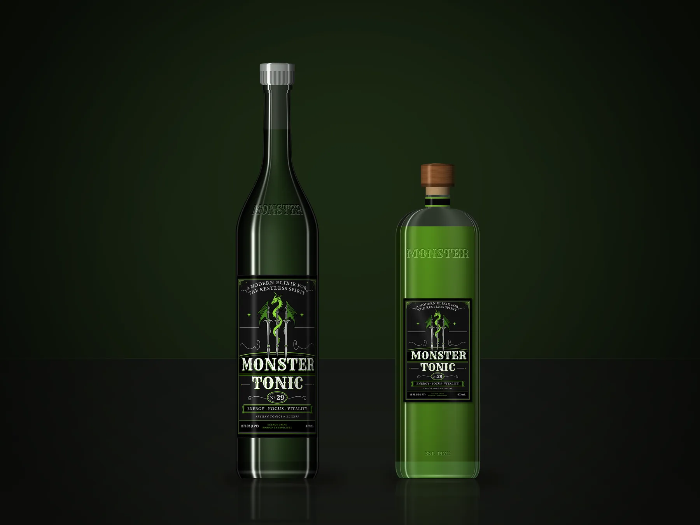
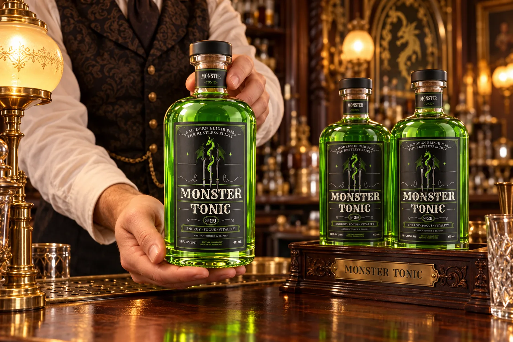

Packaging
Monster Tonic
A concept that reimagines an energy drink as an artisan apothecary tonic.

- Year
- 2026
- Course
- Graphic Design 3 (GRA410)
- Tools
- Illustrator
- Type
- Packaging
Inspired by Victorian-era packaging, the brand's claw mark becomes an engraved crest in three label systems: Dragon, Thunder and Black & Green. A serif-led type hierarchy, ornamental borders and a numbered edition (Nº 29) give the product a collectible, craft feel.
Concept project for coursework; Monster Energy is a trademark of its owner and is not affiliated with this work. Bottle and bar scenes were created with AI assistance to visualize the labels.



